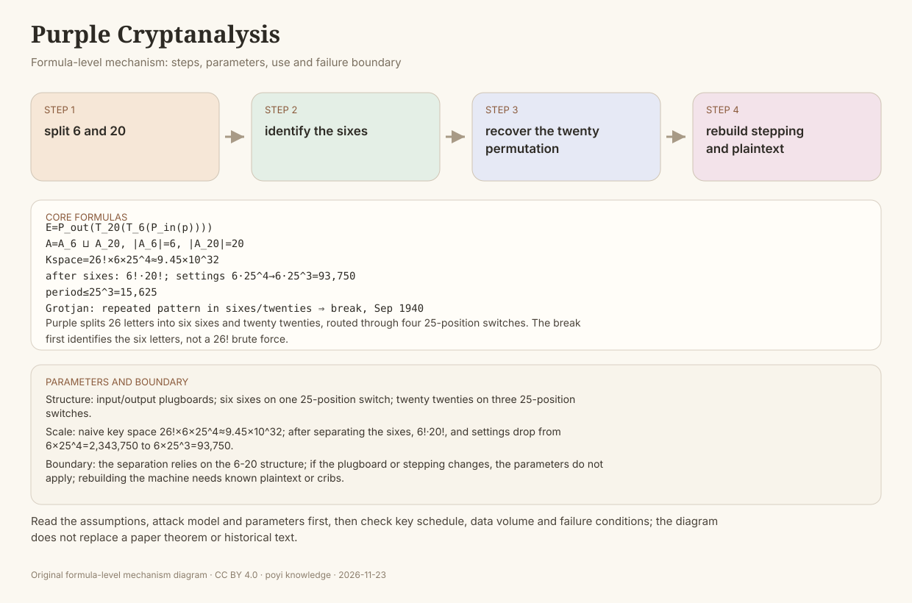
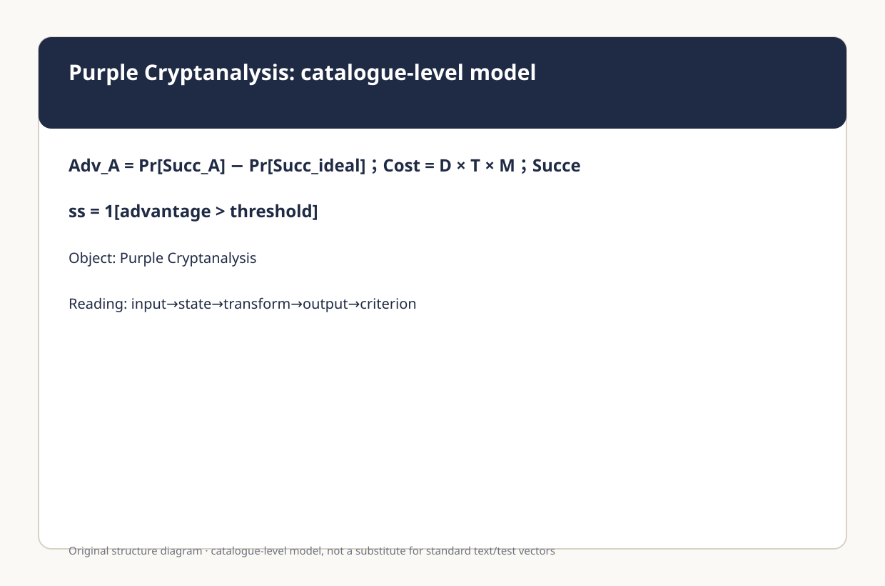

Principles
Attack: Purple Cryptanalysis (紫密破译). ### The 6-20 structure
Purple, the Japanese Type 97 alphabetical typewriter, maps 26 letters through an input plugboard into an internal alphabet fixed as six “sixes” and twenty “twenties”. Encryption is E=P_{out}(T_{20}(T_6(P_{in}(p)))): the sixes pass through one 25-position stepping switch and the twenties through three 25-position switches, after which the output plugboard maps back to letters. ### The break
The naive key space is 26!×6×25^4≈9.45×10^{32}. The 6-20 split restricts the alphabet permutation to 6!·20!; once the six letters are identified, settings drop from 6×25^4=2,343,750 to 6×25^3=93,750, and the switch period is at most 25^3=15,625. In September 1940 Genevieve Grotjan found repeated patterns linking the sixes and twenties, moving the US team from an 18-month deadlock to rebuilding a Purple analog.

Why it matters
The Purple break shows that a large key space is not the same as security: a fixed 6-20 partition splits 26! into 6!·20! and makes statistical identification possible. It relies on finding a structural invariant before rebuilding the stepping, not on raw machine speed.
This is the break mechanism; the machine--purple entry covers the machine structure. The machine entry answers what Purple is made of; this entry answers how the 6-20 split, stepping and known plaintext recover the settings.
Applications
- Collect diplomatic traffic from one key period and find a predictable opening or crib. 2. Separate sixes from twenties by frequency and repeated patterns. 3. Fix the 25-position sixes and recover the 20-letter permutation. 4. Expand the three twenties switches by the stepping rule and match known plaintext. 5. Verify the settings on a second passage before reconstructing the full text.
Do not generalise the 6-20 structure to all rotor ciphers; do not declare a unique key from one crib; do not ignore plugboard and stepping differences between versions.
A shared name may belong to an algorithm, standard, event, person or term; this entry is responsible only for its catalogue binding and does not absorb adjacent records. If versions, regions or institutions define the name differently, the differences stay side by side.

Limits & attacks
- Structural change: if the partition is no longer 6-20, the statistical separation and the 6!·20! reduction fail. 2. Insufficient known plaintext: without a crib, the stepping phase is hard to fix. 3. Message variation: transcoding, abbreviations or padding destroy the pattern. 4. Non-unique settings: short messages can leave several candidates and need a second passage. 5. Rebuild error: wrong switch wiring or stepping order makes decryption fail completely.
History
Japan upgraded to Purple in 1939, and the US Signal Intelligence Service failed to break it for 18 months. In September 1940 Genevieve Grotjan found the repeated relation between sixes and twenties; on 27 September the team read the first messages. Leo Rosen rebuilt an analog with uniselectors—six telephone stepping switches with 25 contacts.
Worked example & verification
Formal model and reproduction steps
[\mathrm{Adv}^{\mathrm{attack}}_A(\lambda)=\Pr[\mathrm{Game}_A(\lambda)=1]-\frac12]
Purple Cryptanalysis: the registered public parameters, key material or randomness, and message are mapped through the stated transformation to an output checked against the registered criterion. The worked example is a structural reproduction, not a new test vector; parameter ranges, standard versions and implementation details remain source-bound.
References
- Wikipedia search entry for 紫密破译. https://zh.wikipedia.org/w/index.php?search=%E7%B4%AB%E5%AF%86%E7%A0%B4%E8%AF%91
- Handbook of Applied Cryptography (Menezes, van Oorschot, Vanstone). https://www.cacr.math.uwaterloo.ca/hac/